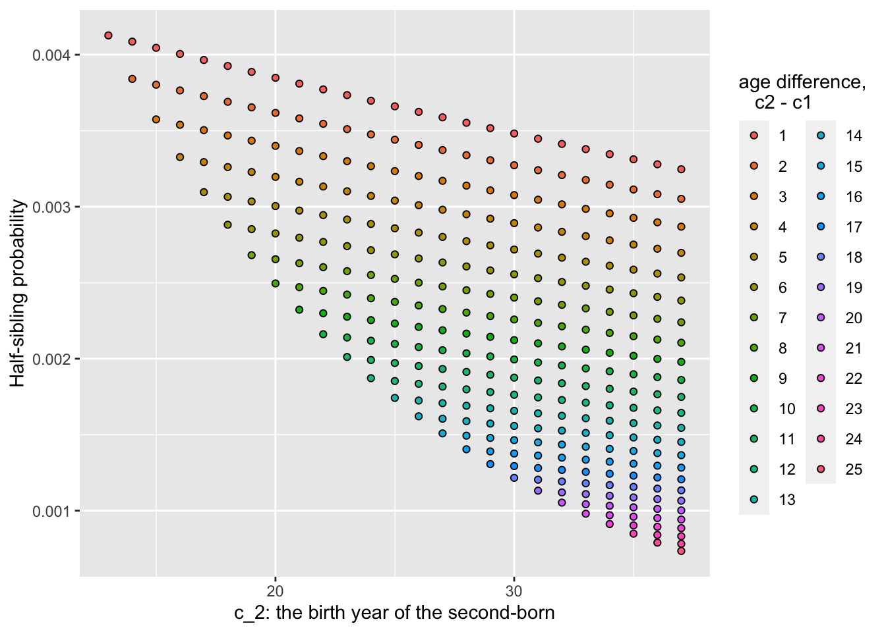

Session 3 Simulation and Inference Play with Hillary et al.’s White Shark CKMR example
Here we explore the models used in Hillary et al. (2018) to estimate abundance of white sharks in Australia. Looking through the paper, I didn’t find any direct mention of a public repository of data that was used in the paper, nor any repository of code for their analyses. So, we are just going to simulate some data here from their model (first just from their inference model, and maybe later we will do so with a simple individual-based-model) so that we have something to work with. One nice thing about simulating from their inference model is that doing so offers a good way to gain a better understanding their inference model.
3.1 Simulating from their inferential model
They start with a demographic model of exponential growth: \[ N_t^A = N_\mathrm{init}e^{\lambda t} \] where \(N_t^A\) is the number of adults at time \(t\) and \(N_\mathrm{init}\) is the initial number of adults (at time \(t = 0\)). \(\lambda\) is an exponential growth rate.
Here, we define a function to calculate \(N_t^A\):
library(tidyverse)
library(microbenchmark)
library(TMB)
#' calculate the number of adults at time t, given exponential growth or decline
#' @param N0 number of adults at time 0
#' @param t time
#' @param lambda exponential growth rate parameter
N_adults <- function(N0, t, lambda) {
N0 * exp(lambda * t)
}Let’s see what that would look like over 60 years, starting from a few different \(N_\mathrm{init}\) values and growing/shrinking at a range of values.
A_traj <- expand_grid(
Ninit = c(600, 800, 1000, 1200, 1500, 2000),
lambda = seq(-0.03, 0.03, by = 0.01)
)%>%
mutate(
num_adults = map2(Ninit, lambda, function(x, y) N_adults(x, 0:60, y)),
) %>%
unnest(num_adults) %>%
group_by(Ninit, lambda) %>%
mutate(year = 0:60)
ggplot(A_traj, aes(x = year, y = num_adults, colour = factor(lambda))) +
geom_line() +
facet_wrap(~ Ninit)Now we are going to write a function to simulate sampled pairs from such a population, and then we will simulate some of them to be half-siblings according to the probabilities in their inferential model.
#' simulate sampling n sharks a year from year Slo to Shi and return all the sample pairs
#' @param npy number of sharks to sample each year (num per year)
#' @param Slo year to start sampling
#' @param Shi final year in which to sample
#' @param ages a vector of the ages at which individuals are sampled
#' @param age_wts vector of expected proportion of each age in the sample
#' @param N0 initial population size
#' @param lambda population growth rate
#' @param Thi final time to simulate an abundance (must be >= than Shi)
#' @param phiA Adult annual survival probability
#' @return This returns a list of three components: `pairs`: a tibble of all the pairs,
#' `pair_counts`: a tibble of counts of different pair types of different age differences,
#' and `samples`: a simple tibble of just the samples, and `N`: a tibble of the
#' number of adults each year.
simulate_pairs <- function(
npy = 10,
Slo = 20,
Shi = 40,
ages = 3:8,
age_wts = rep(1, length(ages)),
N0 = 800,
lambda = 0.01,
Thi = 60,
phiA = 0.94
) {
A_traj <- tibble(
year = 0:Thi
) %>%
mutate(
num_adults = N_adults(N0, year, lambda)
)
samples <- tibble(
samp_year = rep(Slo:Shi, each=npy)
) %>%
mutate(
age = sample(ages, size = n(), replace = TRUE, prob = age_wts),
born_year = samp_year - age
) %>%
left_join(A_traj, by = c("born_year" = "year"))
n <- nrow(samples)
s1 <- samples[rep(1:n, each = n),]
s2 <- samples[rep(1:n, times = n),]
names(s2) <- paste0(names(s2), ".old")
pairs <- bind_cols(s1, s2) %>%
filter(born_year.old < born_year) %>%
mutate(
age_diff = born_year - born_year.old,
HSP_prob = (4/num_adults) * (phiA ^ (born_year - born_year.old)),
isHSP = rbernoulli(n(), p = HSP_prob)
)
pair_counts <- pairs %>%
count(born_year, age_diff, HSP_prob, isHSP) %>%
pivot_wider(names_from = isHSP, values_from = n, values_fill = 0L) %>%
rename(n_UP = `FALSE`, n_HSP = `TRUE`)
list(
pairs = pairs,
pair_counts = pair_counts,
pair_data = pair_counts %>% select(-HSP_prob),
samples = samples,
N = A_traj
)
}Now that we have done that, let’s simulate some pairs. We will assume that 20 sharks were sampled per year—that is more than Hillary et al. (2018) had, I think, but it makes the likelihood surface a little cleaner, so, since we can simulate whatever we want, we will simulate an abundance of data:
set.seed(5)
sim_vals <- simulate_pairs(npy = 20, age_wts = 8:3)At this juncture, it is worth stopping for a moment and looking at two of the elements of the
list sim_vals. The pair_counts show the number of half-sibling pairs of different types, and also shows the half-sibling pair probability that was used to simulate them:
sim_vals$pair_counts## # A tibble: 325 × 5
## born_year age_diff HSP_prob n_UP n_HSP
## <int> <int> <dbl> <int> <int>
## 1 13 1 0.00413 10 0
## 2 14 1 0.00409 35 0
## 3 14 2 0.00384 14 0
## 4 15 1 0.00405 84 0
## 5 15 2 0.00380 60 0
## 6 15 3 0.00357 24 0
## 7 16 1 0.00401 216 0
## 8 16 2 0.00376 124 2
## 9 16 3 0.00354 90 0
## 10 16 4 0.00333 36 0
## # … with 315 more rows
## # ℹ Use `print(n = ...)` to see more rowsIn this tibble, n_HSP is the number of half-sibling pairs found in which the younger member was
born in born_year and the older member was born age_diff years before. As you can see, there
are a lot of categories for which no HSPs are found. That is to be expected—they are pretty rare, and, of course, you expect to see fewer of them if the population is large…that is how CKMR works… The HSP_prob column gives the probability of seeing an HSP of a certain category given
the values of the parameters that were used to simulate the data.
Typically if you had some observed data, you wouldn’t compute the HSP_prob for parameter
values you didn’t know. So, if you had observed data it would look like:
sim_vals$pair_data## # A tibble: 325 × 4
## born_year age_diff n_UP n_HSP
## <int> <int> <int> <int>
## 1 13 1 10 0
## 2 14 1 35 0
## 3 14 2 14 0
## 4 15 1 84 0
## 5 15 2 60 0
## 6 15 3 24 0
## 7 16 1 216 0
## 8 16 2 124 2
## 9 16 3 90 0
## 10 16 4 36 0
## # … with 315 more rows
## # ℹ Use `print(n = ...)` to see more rowsAnd the goal from those data would be to estimate the parameters that might have produced these data.
It is, however, worthwhile to plot the half-sibling pair probabilities, just to look at those.
sim_vals$pairs %>%
group_by(born_year, age_diff) %>%
summarise(HSP_prob = mean(HSP_prob)) %>%
ggplot(aes(x = born_year, y = HSP_prob, fill = factor(age_diff))) +
geom_point(shape = 21) +
xlab("Year the younger member of pair was born") +
ylab("Half-sibling probability")## `summarise()` has grouped output by 'born_year'. You
## can override using the `.groups` argument.
3.2 An R function to compute the negative log-likelihood
To estimate that parameters that gave rise to the simulated data, we can start with an R function to compute the negative log-likelihood—in other words, the probability of our observed data given values of the parameters, which are the initial population size \(N_\mathrm{init}\), the population growth rate \(\lambda\), and the probability that an adult survives for a year, \(\phi_A\). The following R function computes that CKMR pseudolikelihood:
#' Return the negative log likelihood of the parameter values given the data
#' @param pars a vector (Ninit, lambda, phiA)
#' @param X a tibble like the pair_counts component of the output list from
#' `simulate_pairs()`.
hsp_nll <- function(pars, X) {
N0 <- pars[1]
L <- pars[2]
P <- pars[3]
LL <- X %>%
mutate(
N = N0 * exp(L * born_year),
hspp = (4 / N) * P ^ age_diff,
logl = log(hspp) * n_HSP + log(1 - hspp) * n_UP
)
-sum(LL$logl)
}Let’s first compute the negative log-likelihood for the values used in the simulation:
hsp_nll(
pars = c(800, 0.01, 0.94),
X = sim_vals$pair_data
)## [1] 1508Since this is a negative log likelihood, a smaller number is better. We can see that if we choose parameter values that are far from the true ones we get a bigger (less good) value of the negative log likelihood.
hsp_nll(
pars = c(1800, 0.05, 0.94),
X = sim_vals$pair_data
)## [1] 1752It is a fun exercise to visualize this log-likelihood surface. But we are not going to do that
with this hsp_nll function, because it is quite slow. Observe how many milliseconds it takes to evaluate the likelihood using the hsp_nll() function:
mb <- microbenchmark::microbenchmark(
R_version = hsp_nll(
pars = c(1800, 0.05, 0.94),
X = sim_vals$pair_data
),
times = 100
)## Warning in microbenchmark::microbenchmark(R_version =
## hsp_nll(pars = c(1800, : less accurate nanosecond times
## to avoid potential integer overflows# on average, typically more than 2 milliseconds:
mb## Unit: microseconds
## expr min lq mean median uq max neval
## R_version 671.4 689.5 765.7 714.3 780.1 2885 100In general, straight-up R is a little underpowered for computing these sorts of likelihoods, and there are some serious advantages to calculating them in compiled code using the package TMB. We will do that next.
3.3 Evaluate the likelihood with TMB
You need the following code in a file TMB/hsp_nll.cpp, relative to the
current working directory. (That file is already in this repository).
// simple half-sibling CKMR with exponential pop growth and known ages
#include <TMB.hpp>
template<class Type>
Type objective_function<Type>::operator() ()
{
DATA_VECTOR(n_UP);
DATA_VECTOR(n_HSP);
DATA_VECTOR(born_year);
DATA_VECTOR(age_diff);
PARAMETER(N_init);
PARAMETER(lambda);
PARAMETER(phiA);
ADREPORT(N_init);
ADREPORT(lambda);
ADREPORT(phiA);
Type N; // for storing the pop size at time of younger kids birth
Type hsp; // for storing the half-sibling pair prob
Type nll = 0;
for(int i=0;i<n_UP.size(); i++) {
N = N_init * exp(lambda * born_year[i]);
hsp = (4 / N) * pow(phiA, age_diff[i]);
nll -= log(hsp) * n_HSP[i] + log(1 - hsp) * n_UP[i];
}
return nll;
}That file first must be compiled.
compile("TMB/hsp_nll.cpp")## [1] 0After that we will make some data and parameter lists:
# then get our data in a list of vectors
data <- sim_vals$pair_data %>%
select(n_UP, n_HSP, born_year, age_diff) %>%
as.list()
# and then our starting parameters
parameters <- list(N_init = 1000, lambda = 0.001, phiA = 0.9)Now, to make an AD function with TMB, we need to link to the library created when we compiled the file above. For unknown reasons,on a Mac, TMB seems unable to deal with having the compiled object files in a subdirectory, so, in the following code chunk we test to see if we are on a Mac, and if we are we momentarily switch to the TMB directory. Otherwise we just run the functions the way we should be able to.
if(Sys.info()["sysname"] == "Darwin") {
setwd("TMB")
dyn.load(dynlib('hsp_nll'))
obj <- TMB::MakeADFun(data = data, parameters = parameters, DLL="hsp_nll")
setwd("..")
} else {
dyn.load(dynlib("TMB/hsp_nll"))
obj <- TMB::MakeADFun(data = data, parameters = parameters, DLL="hsp_nll")
}Now, we might want to see how long it takes for this compiled version of the HSP negative log likelihood to be computed:
mb2 <- microbenchmark(
TMB_version = obj$fn(x = parameters), times = 1000
)
# this is in microseconds, so it is effectively 100 times faster
# to evalaute this using TMB.
mb2## Unit: microseconds
## expr min lq mean median uq max
## TMB_version 11.32 11.64 12.28 11.93 12.34 177.4
## neval
## 10003.4 Visualize those log likelihood values
Now that we have a fast way to evaluate those, using TMB, let’s evaluate a lot of log likelihoods so we can make some contour plots. We will evaluate the log likelihood over a range of values of the three parameters:
LL_tib <- expand_grid(
N_init = seq(200, 2000, by = 20),
lambda = seq(-0.04, 0.04, by = 0.01),
phiA = seq(0.85, 1, by = 0.01)
) %>%
mutate(parameters = pmap(
.l = list(a = N_init, b = lambda, c= phiA),
.f = function(a,b,c) list(N_init = a, lambda = b, phiA = c)
)) %>%
mutate(
nll = map_dbl(
.x = parameters,
.f = function(y) obj$fn(x = y)
)
)With all those results, we can make a contour plot, faceted over lambda values to visualize:
LL_tib %>%
group_by(lambda) %>%
mutate(nll = ifelse(nll > min(nll) + 20, NA, nll)) %>%
ungroup() %>%
ggplot(aes(x = N_init, y = phiA, z = nll)) +
geom_contour(binwidth = 1, colour = "gray") +
theme(legend.position = "none") +
facet_wrap(~lambda) +
theme_bw() +
geom_vline(xintercept = 800, colour = "blue") +
geom_hline(yintercept = 0.94, colour = "red")## Warning: Removed 9477 rows containing non-finite values
## (stat_contour).
I am sure there is a cleaner way of dropping all the contour lines smaller than a certain value, but I am not going to bother with it here. The blue and red lines show where the actual “true” simulated values of \(N_\mathrm{init}\) and \(\phi_A\) are, respectively. Recall that the true value of \(\lambda\) is 0.01. And see on that facet that the true values of \(N_\mathrm{init}\) and \(\phi_A\) are near the top of the likelihood (or the bottom of the negative log likelihood, if you prefer to think of it that way).
We see that with this much data, and whilst assuming the correct growth rate, the abundance and the adult survival are estimated quite accurately.
The question remains, however, of how much information there is about \(\lambda\). Can we estimate that well?
3.5 OMG! Let’s investigate the tmbstan package!
One very nice feature of using TMB is that we can plug our TMB object directly into Stan for doing Bayesian inference via No-U-turn MCMC sampling. We do this with the ‘tmbstan’ package. Awesome!
Note that we sort of need to impose some bounds on the parameters. Otherwise, as one might expect seeing the contour plots of the likelihood surfaces, we can get estimated survival parameters exceeding 1.0, which just doesn’t make sense. This is one particularly nice feature of using the TMB object in a Bayesian context—it seems easier to impose these sorts of parameter bounds, than when using the TMB object to maximize the likelihood.
For some reason that I don’t full understand, we have to remake the TMB AD function before
we run the following. Something about having used obj$fn to compute the values
of the Neg Log Likelihood, in order to make our pretty contour plots, has gummed things
up. But no worries, we just define it again:
setwd("TMB")
dyn.load(dynlib('hsp_nll'))
obj <- MakeADFun(data = data, parameters = parameters, DLL="hsp_nll")
setwd("..")Now we can hand that to tmbstan and do a short MCMC run:
library(tmbstan)## Loading required package: rstan## Loading required package: StanHeaders## rstan (Version 2.21.5, GitRev: 2e1f913d3ca3)## For execution on a local, multicore CPU with excess RAM we recommend calling
## options(mc.cores = parallel::detectCores()).
## To avoid recompilation of unchanged Stan programs, we recommend calling
## rstan_options(auto_write = TRUE)##
## Attaching package: 'rstan'## The following object is masked from 'package:tidyr':
##
## extractset.seed(10)
fit <- tmbstan(
obj,
chains=1,
lower = c(N_init = 20, lambda = -0.5, phiA = 0.2),
upper = c(N_init = Inf, lambda = 0.5, phiA = 1.0),
iter = 7500
)##
## SAMPLING FOR MODEL 'tmb_generic' NOW (CHAIN 1).
## Chain 1:
## Chain 1: Gradient evaluation took 8.8e-05 seconds
## Chain 1: 1000 transitions using 10 leapfrog steps per transition would take 0.88 seconds.
## Chain 1: Adjust your expectations accordingly!
## Chain 1:
## Chain 1:
## Chain 1: Iteration: 1 / 7500 [ 0%] (Warmup)
## Chain 1: Iteration: 750 / 7500 [ 10%] (Warmup)
## Chain 1: Iteration: 1500 / 7500 [ 20%] (Warmup)
## Chain 1: Iteration: 2250 / 7500 [ 30%] (Warmup)
## Chain 1: Iteration: 3000 / 7500 [ 40%] (Warmup)
## Chain 1: Iteration: 3750 / 7500 [ 50%] (Warmup)
## Chain 1: Iteration: 3751 / 7500 [ 50%] (Sampling)
## Chain 1: Iteration: 4500 / 7500 [ 60%] (Sampling)
## Chain 1: Iteration: 5250 / 7500 [ 70%] (Sampling)
## Chain 1: Iteration: 6000 / 7500 [ 80%] (Sampling)
## Chain 1: Iteration: 6750 / 7500 [ 90%] (Sampling)
## Chain 1: Iteration: 7500 / 7500 [100%] (Sampling)
## Chain 1:
## Chain 1: Elapsed Time: 1.50481 seconds (Warm-up)
## Chain 1: 1.64021 seconds (Sampling)
## Chain 1: 3.14503 seconds (Total)
## Chain 1:# and here is a summary of the result:
fit## Inference for Stan model: hsp_nll.
## 1 chains, each with iter=7500; warmup=3750; thin=1;
## post-warmup draws per chain=3750, total post-warmup draws=3750.
##
## mean se_mean sd 2.5% 25%
## N_init 925.85 9.54 352.45 435.15 675.98
## lambda 0.00 0.00 0.01 -0.03 -0.01
## phiA 0.92 0.00 0.02 0.89 0.92
## lp__ -1505.88 0.03 1.21 -1509.10 -1506.46
## 50% 75% 97.5% n_eff Rhat
## N_init 864.94 1096.32 1808.96 1365 1
## lambda 0.00 0.01 0.03 1328 1
## phiA 0.92 0.94 0.95 1345 1
## lp__ -1505.56 -1504.99 -1504.51 1189 1
##
## Samples were drawn using NUTS(diag_e) at Fri Sep 16 15:38:53 2022.
## For each parameter, n_eff is a crude measure of effective sample size,
## and Rhat is the potential scale reduction factor on split chains (at
## convergence, Rhat=1).Anyone who has spent months trying to “roll their own” MCMC sampler will recognize that this was uncharacteristically painless. That is part of the joy of being able to calculate gradients (with the auto-differentiation features of TMB) to use those in Hamiltonian Monte Carlo. Also, the maintainers of Stan, TMB, and tmbstan have done an amazing job!
If you want a really slick visual representation of the results from the MCMC, you can do:
library(shinystan)
launch_shinystan(fit)We don’t do that in this Rmarkown document, because you need to be in a an interactive session for it to work, but, just know that it pops up a shiny window like this:
Also, if we wanted to start our chain from different starting values
and run it in parallel on different cores, we can do that like this, though it
seems the interface to this has changed a little. Try ?tmbstan for details.
cores <- parallel::detectCores()-1
options(mc.cores = cores)
set.seed(1)
init.list <- lapply(1:cores, function(x) {
c(
N_init = runif(1, min = 2000, max = 20000),
lambda = runif(1, -0.04, 0.04),
phiA = runif(1, 0.75, 0.999)
)}
)
fit2 <- tmbstan(
obj,
chains=cores,
open_progress=FALSE,
init=init.fn,
lower = c(N_init = 20, lambda = -0.5, phiA = 0.2),
upper = c(N_init = Inf, lambda = 0.5, phiA = 1.0),
iter = 6000,
warmup = 2000
)That is remarkably easy and slick. I’m impressed.